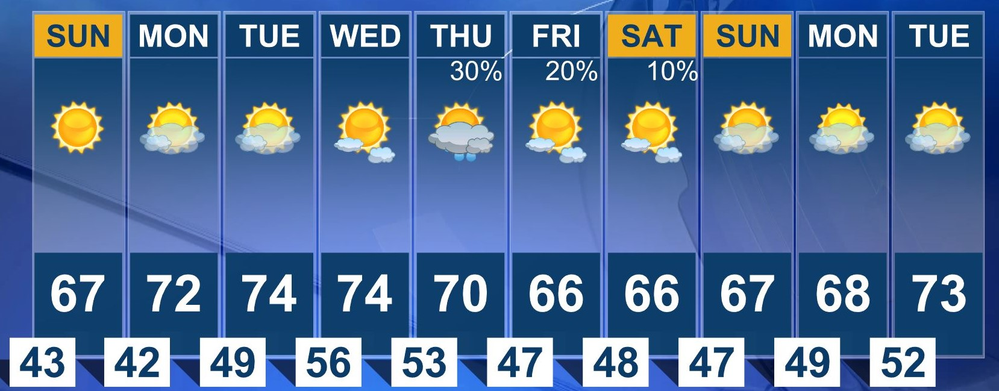
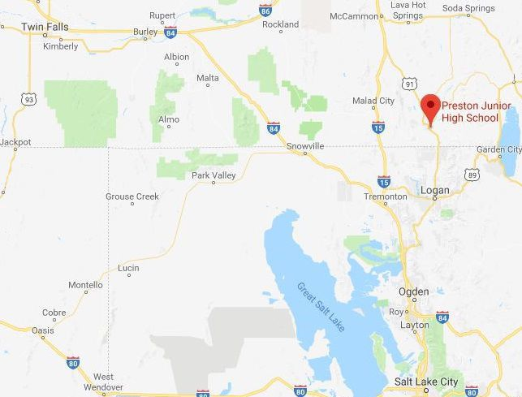

Preston Idaho

Idaho Botanical Garden is a private, non-profit corporation existing
without state or federal funding. The Garden is completely dependent
on tax-deductible contributions from community-minded citizens,
corporations, foundations, and site rental. Our mission is to
Cultivate. Educate. Celebrate. We grow our community by connecting
people, plants and nature. The Idaho Botanical Garden, one of the
first and oldest botanical gardens in Idaho, is a lush 15-acre
tapestry of dappled shade and vibrant splashes of color. Nestled in
the Boise Foothills, it is a sanctuary in the heart of the Old
Penitentiary Historic District. The Garden promotes horticulture in
the Treasure Valley using native and domestic plants adapted to the
intermountain region.
Read more
Read more
Contact

Email: preston26weather@gmail.com
Phone Number: (350) 748-7295